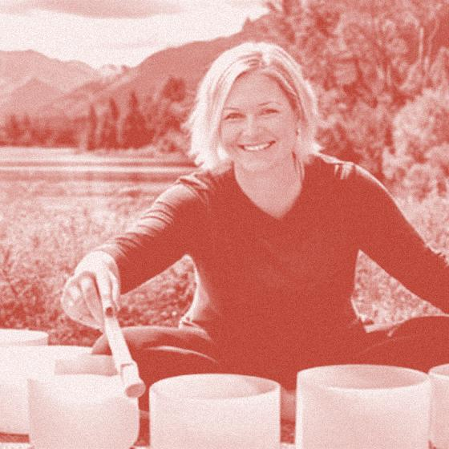
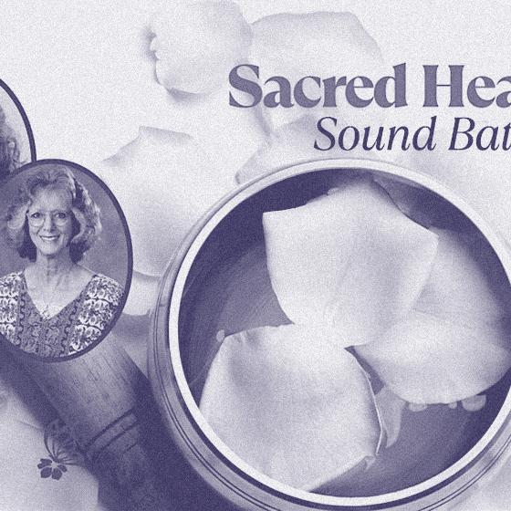
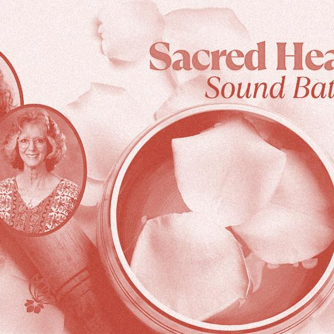
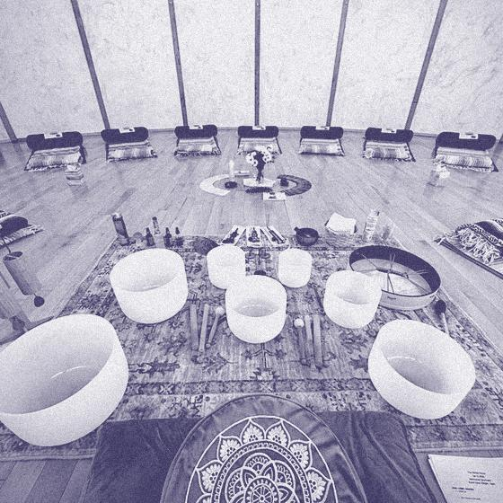
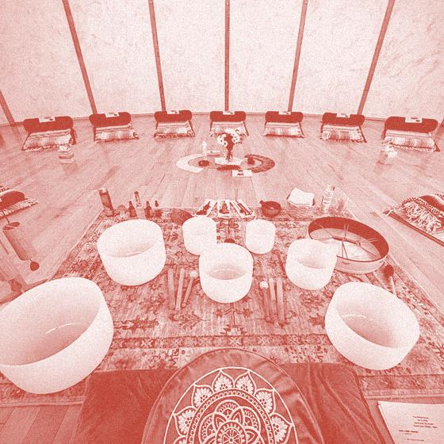

Denver Sound Bath Collective-Smiley
A sound bath from the Denver Sound Bath Collective, led by IzaBelle Sweet, at the Denver Public Library's Smiley Branch, Wednesday evening; $15–40.

Else that week in Denver


Sacred Sound Bath ❤ Dawn Stratton & Vialet Rayne

